Admin → Users 重新设计 · 两个方向
已定（2026-10-16）：方案 A，加搜索，加「最近活跃」列，实现见最后一节。从你的截图出发：每行 6 个按钮折成两行，红框的 Disable / Delete 每行都有；
Role / Status / Sign-in 三列几乎全是同一个值（MEMBER / Active / Password），
真正需要注意的（停用、Google 待关联、管理员）反而不显眼；长邮箱被挤成两行；自己那一行没有标记；没有搜索。
下面每张图都是真实页面加测试数据渲染出来的；A、B 是在真实页面上做的原型（未上线）。
现状同一组 9 个账号，1280 宽窗口（侧栏占去一块后，按钮竖着堆成 4–5 个）
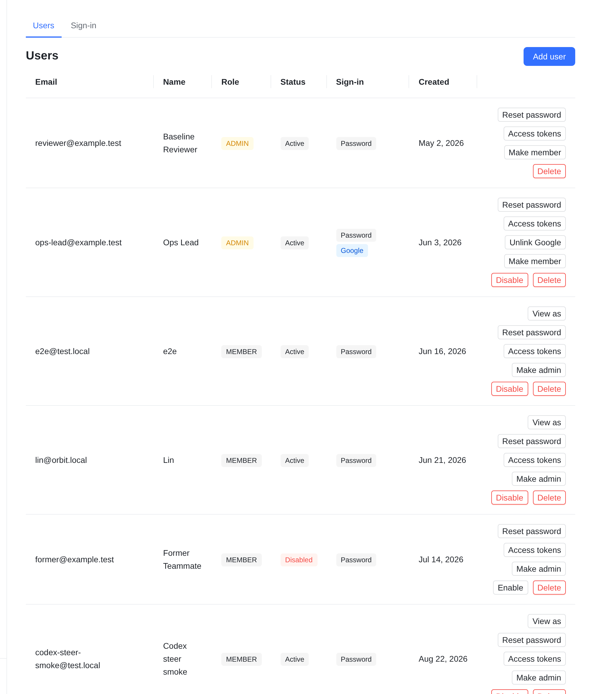
- 1操作按钮是主角：一行最多 6 个（View as、Reset password、Access tokens、Unlink Google、Make admin、Disable、Delete），窗口一窄就折成多行，一行一百多像素高。
- 2危险操作太近：Disable / Delete 每行一对红框，和常用的 Reset password 挨着，满屏都是红色。
- 3信息被稀释：三列徽章重复同样的内容；停用的人、只用 Google 还没关联上的人，需要一格一格找。
- 4身份分在两列：Email 和 Name 各占一列，长邮箱被挤成两行；看不出哪一行是你自己。
- 5没有人数、没有搜索；账号一多只能滚动着找。
方案 A紧凑表格 + ⋮ 菜单推荐
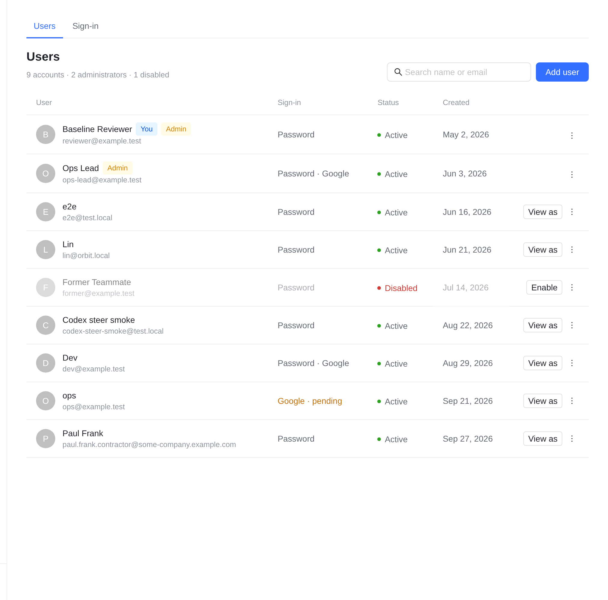
默认：一人一行，只露出一个最常用的操作。
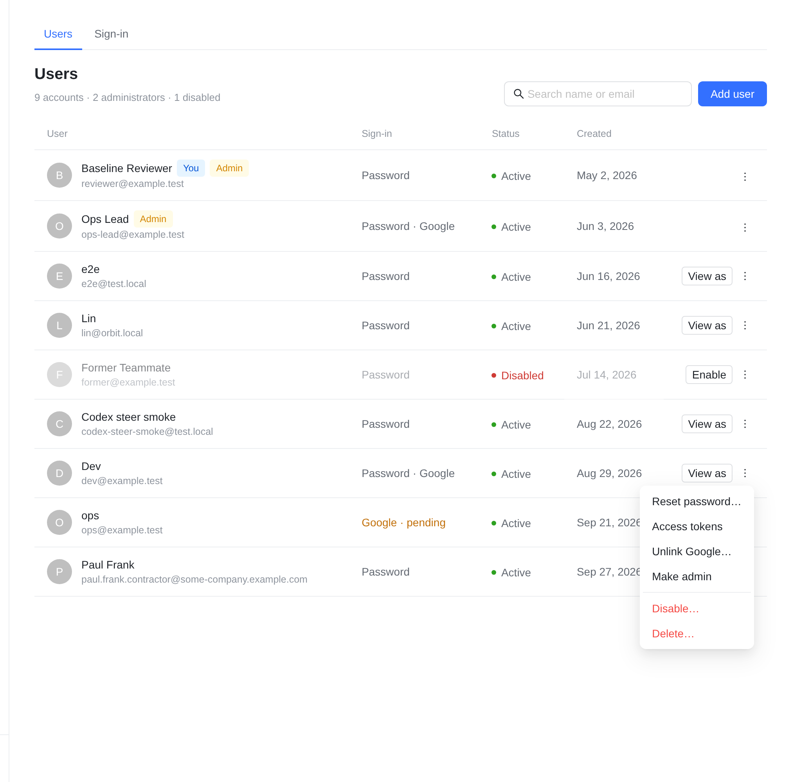
点 ⋮：其余操作，危险的在分隔线下面。
- 1一人一行：头像 + 名字 + 邮箱（灰色、单行，太长就省略）；You、Admin 是名字后的小标签，Member 不再标。
- 2只露出一个操作：成员是 View as，停用的人是 Enable；管理员和你自己那行没有（本来就不能 View as）。
- 3其余进 ⋮：Reset password… / Access tokens / Unlink Google…（关联了才有）/ Make admin，分隔线下是红色的 Disable… / Delete…。点了之后的对话框全部沿用现在的。
- 4状态只在异常时显眼：Active 是小绿点，Disabled 是红点、整行变淡；Google · pending 用黄色字。表头去掉竖线、改成灰色小字。
- 5顶部：9 accounts · 2 administrators · 1 disabled，加一个按名字或邮箱即时过滤的搜索框（纯前端，不加接口）。
- 6改动面小：只改
AdminUsersPage.tsx 和样式，接口、对话框、现有测试的行为都不变。
方案 B列表 + 右侧详情抽屉
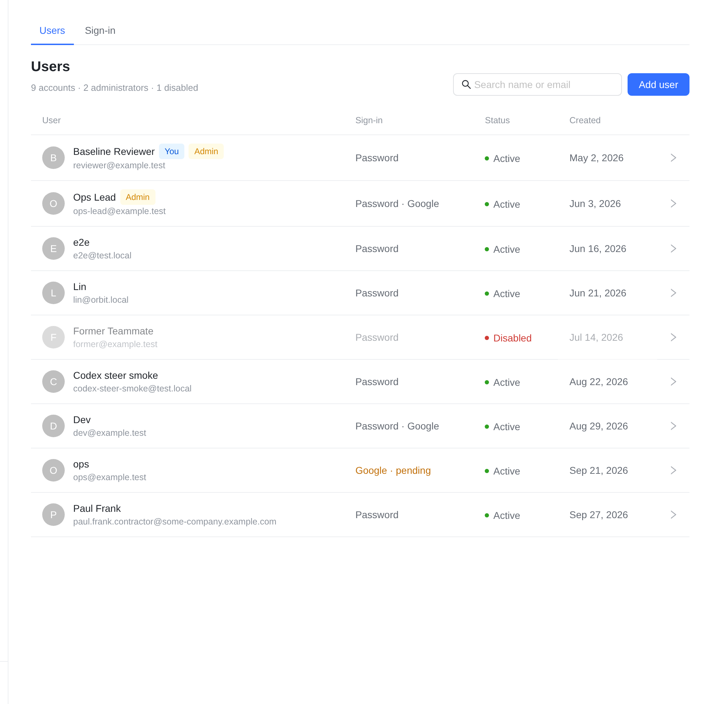
列表：行上不放任何按钮，整行可点。
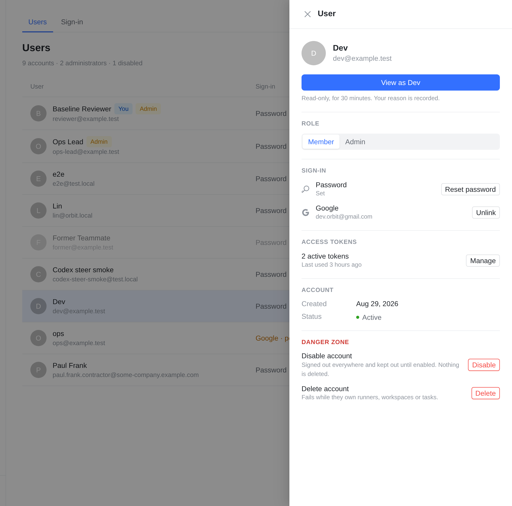
点一行：右侧打开这个人的详情，所有操作都在这里。
- 1抽屉从上到下：View as（主按钮，下面一句只读 30 分钟的说明）→ 角色（Member / Admin 切换）→ 登录方式（重置密码、解绑 Google）→ 访问令牌 → 账号信息 → 危险区（停用、删除，各带一句后果说明）。
- 2好处：危险操作离列表最远，每个操作旁边都有说明；以后要加「最近活跃」「名下的 runner / 会话」也有地方放。
- 3代价：任何操作都要先点开一行；改动更大（新的抽屉，令牌数量要在打开时再请求一次
/admin/users/:id/access-tokens）。
手机390pt：A 的列表 · A 点 ⋮ · B 的抽屉
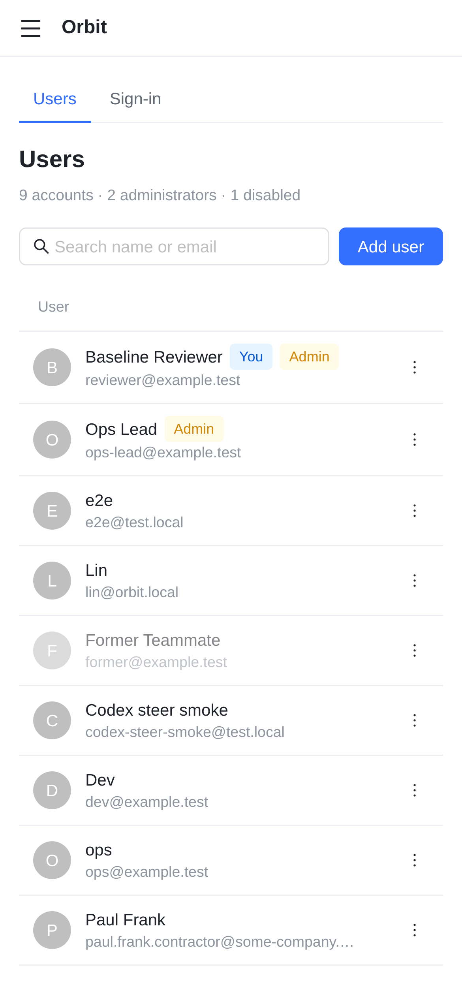
A：只剩名字、邮箱和 ⋮（现在手机上这个页面基本没法用）。
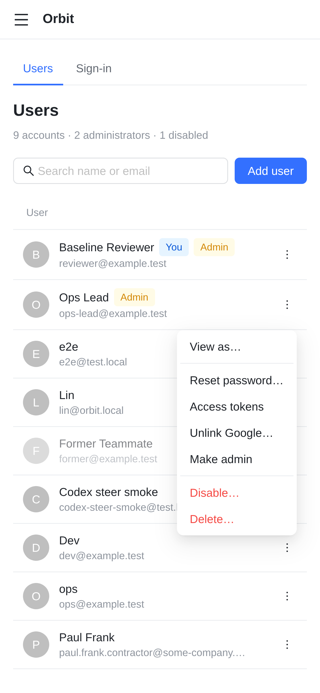
A：手机上 View as… / Enable 挪到菜单第一项。
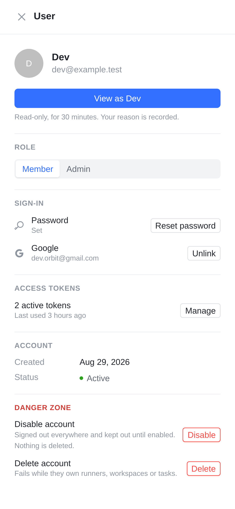
B：抽屉占满屏幕，内容和桌面一样。
对照每个操作现在在哪、改完在哪
| 操作 | 现状 | 方案 A | 方案 B |
|---|
| View as | 行内按钮 | 行内按钮（手机：⋮ 第一项） | 抽屉主按钮 |
| Enable | 行内按钮 | 行内按钮（手机：⋮ 第一项） | 抽屉主按钮 |
| Reset password | 行内按钮 | ⋮ | 抽屉 · 登录方式 |
| Access tokens | 行内按钮 → 对话框 | ⋮ → 同一个对话框 | 抽屉 · 访问令牌（数量 + Manage） |
| Unlink Google | 行内按钮（关联了才有） | ⋮（关联了才有） | 抽屉 · 登录方式 |
| Make admin / member | 行内按钮 | ⋮ | 抽屉 · 角色切换 |
| Disable / Delete | 行内红框按钮 | ⋮，分隔线下、红字 | 抽屉 · 危险区 |
| Add user | 右上角 | 右上角，旁边加搜索 | 同 A |
实现已落地的页面（不是原型），同一组测试数据，固定时间 2026-09-28 12:00
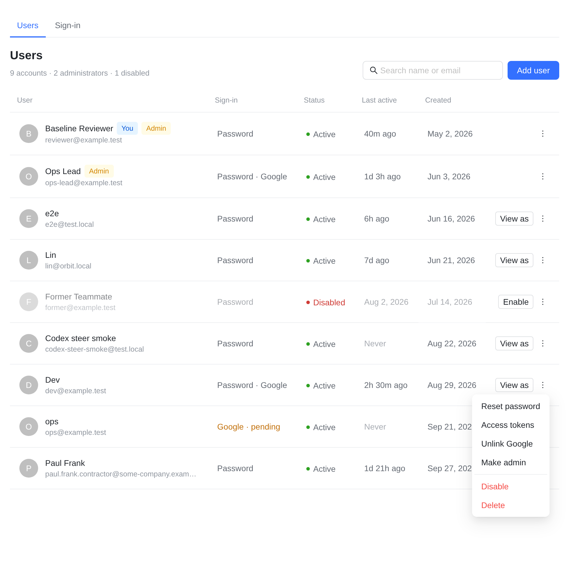
桌面 1280：六列，点 ⋮ 的菜单。
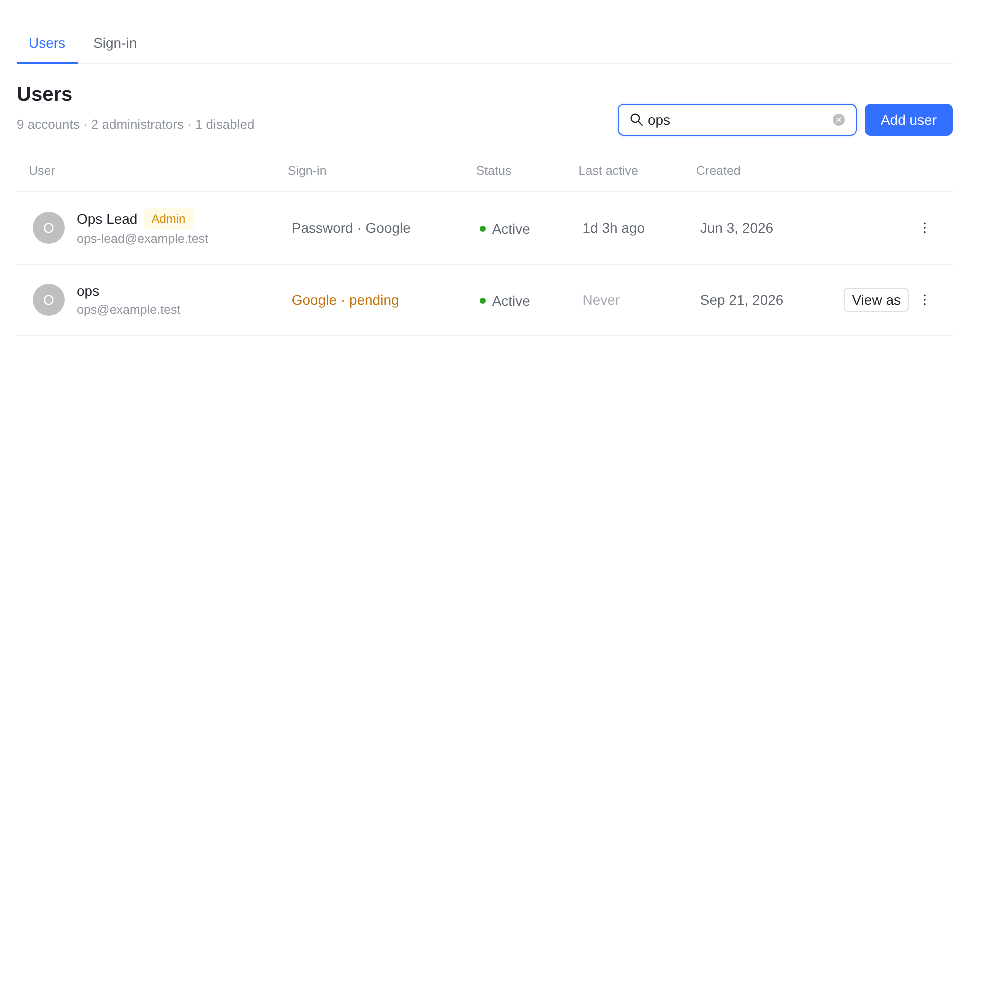
搜索 ops：按名字或邮箱即时过滤，没有匹配时说 No users match “…”。
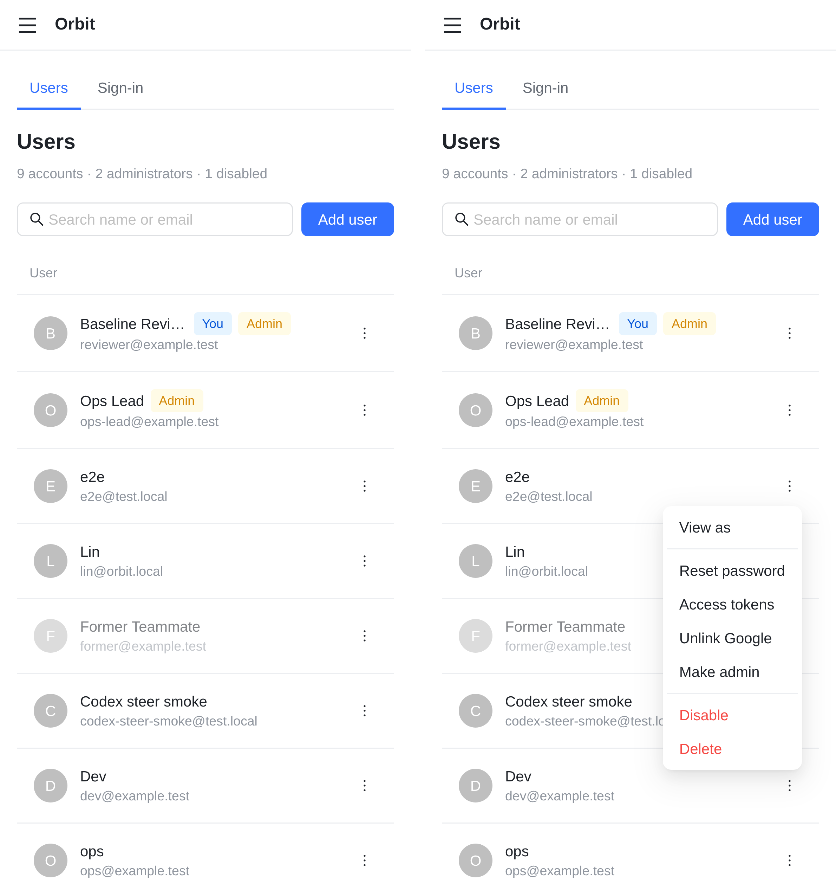
手机：行内只剩 ⋮，菜单第一项是 View as / Enable。
- 1最近活跃：账号最后一次用 Orbit 的时间——各个 App（Web / iOS / Mac / Android）的请求，或它的访问令牌被使用，取最晚的一个；悬停显示精确时间和途径。App 的记录每小时最多写一次，所以正在用的人可能显示为「一小时内」的某个时间。管理员 View as 不算对方的活跃。超过 30 天显示日期，从没用过显示 Never。不新增任何写入：读的是已有的
client_version 和令牌的 last_used_at。
- 2列随宽度收起：按表格自己的宽度（不看窗口，侧栏可以拖宽），依次收起 Created → Sign-in → Status → Last active；1280 的笔记本窗口六列都在，任何宽度都不出横向滚动。
- 3和稿子的差别：菜单项不带「…」（和 Runner 的 Actions 菜单一致）；Reset password 和 Delete 原来是小气泡确认，现在和 Disable 一样用对话框问，被拒绝时原因写在对话框里；自己那行的菜单不再有 Delete（服务端本来就拒绝）。
已定你的决定（2026-10-16）
方案 A；加搜索；加「最近活跃」列。当时的三个问题：
- 方向：A（推荐）还是 B？A 的理由：最常用的 View as 一步到位，危险操作收进菜单，改动小、风险低。B 适合以后每个人要展示更多信息的时候。
- 搜索框：要不要？现在 9 个账号用处不大，账号多了才有用。
- 「最近活跃」列：要不要加？对管理员很有用（谁很久没来了），但列表接口目前没有这个数据，需要后端补。